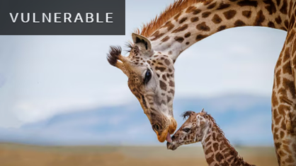

GIRAFFA CAMELOPARDALIS
Giraffe
With their long noses and lanky legs, giraffes are literally head and shoulders above the rest – towering over the arid African savannahs, they are the tallest mammals roaming the Earth.